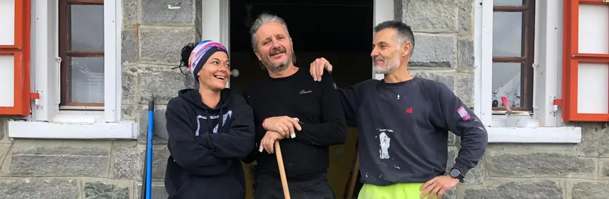
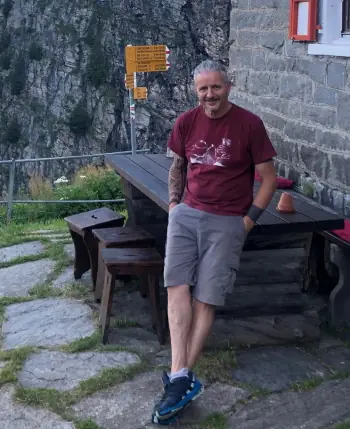
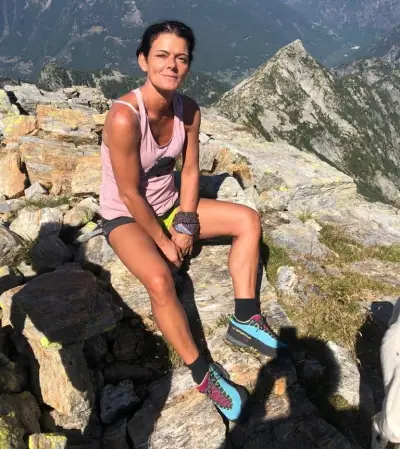
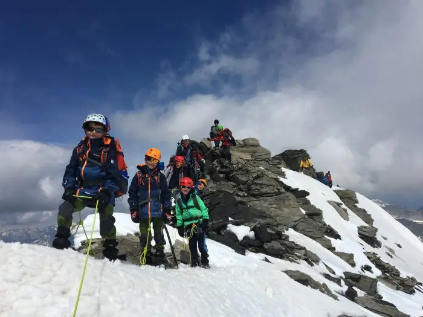
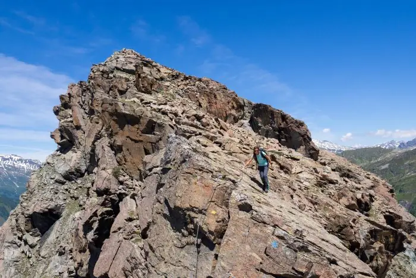
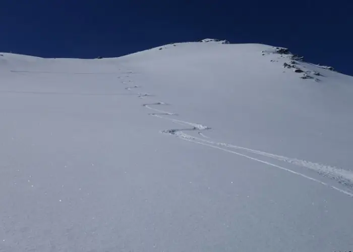
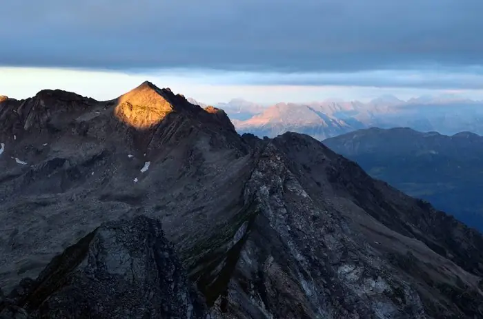

Adula
Alta Val Carassino, Val Soi, Blenio
- Altitudine
- 2012 m
- Posti letto
- 24
- Custodia
- da fine maggio a metà ottobre

La capanna
La «Bassa», come la si chiama da sempre, ha il fascino del rifugio d’altri tempi: costruzione in pietra, un soggiorno che trasuda storia, dormitori che hanno visto passare migliaia di alpinisti, accoglienza calorosa e cucina nostrana. Da questo balcone sulla Valle di Blenio si parte per la cima dell’Adula o, su comodi sentieri, verso altre capanne; i selvaggi itinerari della Val Carassino offrono un escursionismo avventuroso. Per i meno ambiziosi: una passeggiata in valle, un buon pranzo e un pisolino al sole.
La «Bassa», come la si chiama da sempre, è stata inaugurata nel 1924 e ha conservato tutte le caratteristiche dell’edificio originale in pietra e legno: un soggiorno che trasuda storia, dormitori che hanno visto passare migliaia di alpinisti, accoglienza calorosa e una cucina nostrana che riempie lo stomaco e lo spirito.
Ha 24 posti letto in quattro piccoli dormitori da 4, 5 e 7 posti, adatti anche alle famiglie, e due stanzette matrimoniali con sovrapprezzo; due refettori accoglienti da 20 posti, servizi interni, doccia, pannelli solari per l’illuminazione e cucina a legna e a gas. I letti hanno piumoni; il sacco lenzuolo è obbligatorio. Ricezione discreta vicino alla capanna.
Il locale invernale è sempre aperto, con bibite e legna.
Soggiorno
- Apertura
- Tutto l’anno
- Custodia
- Da fine maggio a metà ottobre
- Posti letto
- 24
- Pasti
- Pasti preparati dal guardiano; cucina autonoma solo d’inverno o d’accordo con il guardiano
- Bibite
- Disponibili anche in assenza del guardiano
Arrivare
- Cartina
- CNS 1253 Olivone, coordinate 719.510 / 150.950
La cucina
La terrazza panoramica invita a mangiare all’aperto. Ogni giorno cuciniamo con prodotti locali: piatti ticinesi, formaggi e formaggini, pasta al sugo, zuppa, minestrone e i nostri rösti conditi in vari modi, oltre a diverse torte sempre pronte.
A chi pernotta la cena propone piatti e specialità secondo i prodotti di stagione, e una ricca colazione dà la forza per nuove avventure.
Importante: avvisateci in tempo se siete vegetariani o vegani, o se avete allergie o intolleranze.
I cani sono benvenuti, ma non nelle camere: per loro c’è una sistemazione all’esterno. Avvisateci prima se portate il vostro cane.
Chi vi accoglie

Sono Lele, alla Capanna Adula dal 2024, insieme alla mia compagna Mirella. La passione per la montagna e l’esperienza come aiuto in altre capanne oltralpe mi hanno portato a lasciare il mio lavoro per vivere a contatto con la gente e la natura.
Durante la stagione ci aiutano giovani che hanno voglia di vivere un’esperienza unica in quota. Un sogno diventato realtà.


Tariffe e prenotazioni
PrenotaSoci CAS/FAT e club con diritto di reciprocità
Pernottamento, cena (zuppa, insalata, piatto forte, dessert) e colazione, IVA inclusa
- Bambini fino a 7 anni
- Fr. 30.–
- Ragazzi da 8 a 14 anni
- Fr. 45.–
- Giovani da 15 a 21 anni
- Fr. 58.–
- Adulti dai 22 anni
- Fr. 75.–
Non soci
Pernottamento, cena (zuppa, insalata, piatto forte, dessert) e colazione, IVA inclusa
- Bambini fino a 7 anni
- Fr. 30.–
- Ragazzi da 8 a 14 anni
- Fr. 50.–
- Giovani da 15 a 21 anni
- Fr. 63.–
- Adulti dai 22 anni
- Fr. 85.–
Famiglie e gruppi
Sconto infrasettimanale per famiglie (domenica-giovedì) e prezzi per scuole, scout e G+S in settimana
- Famiglie: riduzione per ogni bambino sotto i 15 anni
- Fr. 5.–
- Gruppi: ragazzi da 8 a 14 anni
- Fr. 35.–
- Gruppi: giovani da 15 a 21 anni
- Fr. 45.–
Extra
Per ragioni igieniche il sacco lenzuolo è obbligatorio
- Camera matrimoniale (supplemento per camera)
- Fr. 20.–
- Tè di marcia (1 l)
- Fr. 5.–
- Doccia (a persona)
- Fr. 5.–
- Sacco lenzuolo monouso
- Fr. 7.–
- Riservazione online con il pulsante «Prenota».
- Disdette senza costi entro le 18.00 di due giorni prima della data riservata.
- Pagamento in contanti, con Twint o carta di credito.
- Non si accettano riservazioni o richieste tramite social media: per informazioni chiamateci.
Come arrivare
D’estate la capanna si raggiunge facilmente dalla mulattiera pianeggiante della Val Carassino, partendo da Compietto. La valle è lunga circa 6 km e tocca due alpeggi, l’Alpe Bolla e l’Alpe Bresciana, dove si produce un ottimo formaggio che si gusta anche in capanna. Il fiume vicino ne fa una passeggiata ideale per le famiglie nelle giornate calde; in mountain bike basta circa un’ora.
D’inverno si sale con gli sci da Dangio per la Val Soi, oppure da Ghirone per il Luzzone e la Val Carassino, con neve sicura e preferibilmente a inizio primavera.
- Da Compietto (posteggio) per la Val Carassino: 2 h 40, in mountain bike circa 1 h.
- Da Dangio (fermata del bus) per la Val Soi: 3 h.
- Da Cusiè in Val Malvaglia (posteggio) per il Passo del Laghetto: 5 h.
- Dalla Läntahütte per la Bocchetta di Fornee.
- D’inverno: da Ghirone 5 h, da Dangio 3 h 30.
In auto: A2 fino a Biasca, poi direzione Lucomagno fino a Campo Blenio e Ghirone; si sale alla diga del Luzzone, la si attraversa e si arriva all’Alpe di Compietto. Oppure si lascia l’auto a Ghirone e si prende il bus alpino.
Con i mezzi pubblici: treno S10 fino a Biasca, bus 131 fino a Ghirone, poi bus alpino verso la diga del Luzzone. Taxi Riviera (Biasca): +41 91 862 48 48.
Traversate ad altre capanne: Motterascio 5 h; Läntahütte 3 h 30; Adula UTOE 1 h; Quarnei 3 h.
Cartine: CNS 1:25’000 foglio 1253 Olivone; carta scialpinistica 256 S.
Attività
All’Adula si respira un profumo antico: l’accoglienza e la buona cucina, con un bicchiere di vino, invitano a sdraiarsi sul prato davanti a uno scenario d’eccezione. Da qui si parte per itinerari entusiasmanti, antichi passaggi e creste aeree.
È il posto giusto per i bambini, che possono vedere fiori stupendi a inizio estate, scovare camosci e stambecchi, sentire le marmotte, accarezzare le mucche e bagnarsi nel fiume. Si dorme in una capanna storica, che conserva il fascino del rifugio d’altri tempi, e si sale sulla vetta dell’Adula, ambizione di tanti ticinesi, con il suo ghiacciaio che purtroppo presto sarà solo un ricordo.

Cima dell’Adula
Sul tetto del Ticino: la salita all’Adula (3402 m) per la via Malvaglia, con discesa sul ghiacciaio di Bresciana.

Proposte di gite
Cinque traversate verso altre capanne, dalla via alta della Val Carassino alla Via Crio.

Inverno e primavera
Cime solitarie per scialpinisti preparati e canali nevosi per l’alpinismo di inizio stagione.

Curiosità
Due capanne e le lotte politiche di cent’anni fa, le antiche transumanze e la ricchezza della Val Carassino.
Dalla capanna
Le ultime notizie della capanna, pubblicate dai guardiani su Facebook.
Apri la pagina FacebookI post vengono caricati da Facebook solo dopo il clic: da quel momento Facebook riceve dati sulla tua visita.
Senti il guardiano prima di partire
Verifica sempre la presenza del guardiano e le condizioni della montagna.
- Guardiano
- Raffaele «Lele» Demaldi
- Telefono capanna
- +41 91 872 15 32
- Cellulare
- +41 79 535 21 12
- adula@casticino.ch